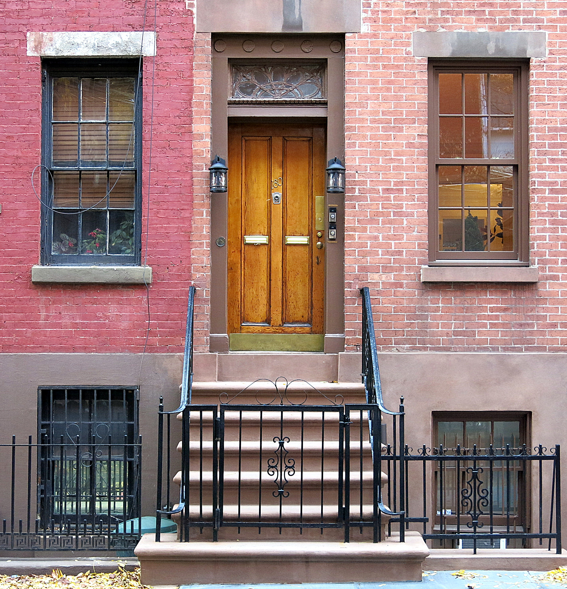
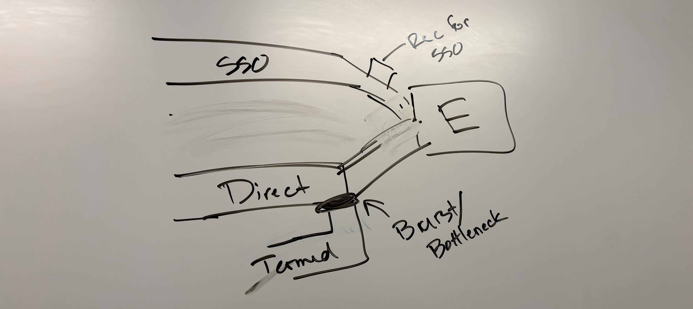
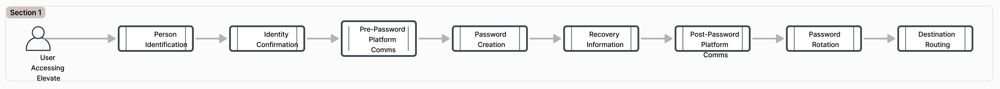

The initial task was to add a path in the existing system that would allow former single-sign on (SSO) employees access to their accounts. These SSO users were never required to create a password, so a method to identify them without authentication from our initial screen did not exist.
solution
While solving for our original challenge, we ended up creating a single path that guides any and all users through successive checkpoints, beginning with one piece of identification, and pausing only when information is needed to continue.
The Front Door for Our Users

A lovely front door that just makes you want to know it's story and visit it someday.
Much like this door and inevitable hallways behind it this Front Door experience is the entrypoint, or session initialization, process on our platform. Thinking of it like an actual home helps us to create a more welcoming and intuitive experience for our users.
Because we have several different sign in methods, tenant configurations, and user situations, the Front Door manages password bypass options, access to multiple sibling applications, and all onboarding considerations (username recovery, password expiration, recovery email, contact preferences, etc.).
Assessing the Existing System
As I dug into the existing experience and began thinking about solutions, the system seemed to be a patchwork of flows, pieced together without consideration of the overall process or user’s experience.
Preliminary ideas felt like they were adding complication and user confusion:
Add a “former employee” link? The tone felt exclusive and out of place, especially if a current employee entered accidentally…
Create an off-shoot experience? This added tech debt to be maintained separately from everything else…
Leverage customer user settings? How, in the existing system?…
Get the wrenches out?
Gaining Perspective, Pivoting…
Bouncing these ideas off of the Technical Lead, we quickly questioned if any addition was worth the effort—not only from an experience perspective, but from a development perspective as well.
With a rough whiteboard of what we knew about the system, we quickly shifted the focus away from solving for a small group of users, to understanding the broader system for all users.

Adding a solution into the existing system would create another problem for us.
A Big Idea with Small Steps
While now representing both user experience and underlying development, we reimagined a simple and streamlined system. Our concept strung together bite-sized user tasks into a sequence of isolated events, each informing the next. Any user could enter and we would be able to systematically guide them on an individualized path.
Sharing the idea with stakeholders and product owners earned us the green light we needed to continue. ✅

Users will not go through all of these steps—only the ones necessary for them.
Forward Together with Leaps and Bounds
With our new structure outlined, we zoomed in on each user step and volleyed for weeks to define development needs and inform design requirements. Together, we:
collaborated in deep discussions, connecting intricate technical situations with clear, easy-to-follow user experience steps,
worked through hundreds of micro-iterations in tandem, looking at each situation from any and all angles, and,
organized each step for users based on chronology, logic, and security.
Keeping this Figjam file up-to-date was imperative and helped move this project directly into interface design.
Building the User Interface
As each step became crystal clear, I knew that the interface design had been set up for success. A consistent layout was created to present each step and animation was wired up to tie them together. I poured over copy, writing and rewriting to be consice and minimal, yet friendly and clear.
Feedback from multiple sources helped guide decisions around clarity and simplicity. Unnecessary words and phrases were removed and components were optimized to show progress and reduce errors. I was able to confidently hand this off to developers to be taken to the next level.
These interfaces will guide a user through each step of signing in.
The Hallway for All Users
Positive User Impact
Reduced cognitive load: by removing all unnecessary interface options on the welcome screen
Individual, guided experience: by starting with a single piece of user information, we are able to guide the user efficiently, for their situation
Faster, industry-standard security: by employing one-time passwords, we provide a modern, familiar method of verification that allows users to stay on the same browser page
Small Changes, Big Results
Moved highly-used SSO button up to top
Added focus states to reduce clicks and accelerate the process
Added progress states and animation between steps to show a sense of progress
Eliminated countless error states
Sped up transitions to routing destinations by simplifying the code to endpoints
Future Releases
The first release of this work was scaled down in order to be manageable, addressing only the steps necessary for current users. When we are ready to activate more checkpoints along our path, adding this work to our roadmap will be easier because our solution lends itself to the iterative nature of development.
Final Thoughts
Collborating and working along-side our Product Architect on this highly-imaginitive and detailed structure was one of the most fun and rewarding projects I've ever taken part in. By working together—rather than one team informing the other—we were able to learn from each other and create something bigger and better than either of us could alone. 😀